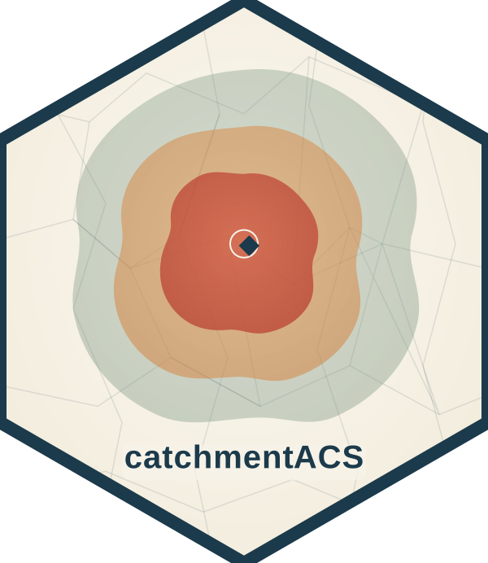

Map a census variable across overlapping tracts (walkthrough stage 3)
Source:R/plot-site.R
cacs_plot_site_weighted.RdDraws a choropleth (a map that shades areas by a data value) of one
American Community Survey (ACS) variable across the census tracts that
overlap the site's isochrone. Tract colour is chosen automatically from
a ColorBrewer palette suited to the variable type. Each tract's pop-up
reports its GEOID (Census tract identifier), the variable code, the
estimate, its margin of error (MOE, the 90 percent confidence band
published with each ACS estimate), the area weight, and the area weight
times the estimate (that tract's contribution to the site total).
As in cacs_plot_site_intersection(), the tract overlaps are recomputed
on the fly from iso_sf and tract_sf, so this map needs no
pre-aggregated results.
Usage
cacs_plot_site_weighted(
site_id = NULL,
lat = NULL,
lon = NULL,
site_name = NULL,
iso_sf,
tract_sf,
acs_sf,
sites_df = NULL,
variable = "B17001_002",
tiles = "CartoDB.Positron",
padding_km = 5,
drive_time_min = NULL,
variable_family = "spatial_total",
...
)Arguments
- site_id
Site identifier to look up in
sites_df. When omitted,sites_dfdefaults to the bundledcacs_alabama_sitestable.- lat, lon
Alternative to
site_id: a direct latitude/longitude coordinate pair in WGS84 (latin[-90, 90],lonin[-180, 180]).- site_name
Alternative to
site_id: an exact match against thesite_namecolumn ofsites_df.- iso_sf
Isochrone polygons (an
sfobject) such as those returned bycacs_isochrone().- tract_sf
Tract polygons (an
sfobject) with aGEOIDcolumn and polygon geometry, typically the same ACS data passed tocacs_intersect_weight().- acs_sf
Long-format ACS data (an
sfobject) with columnsGEOID,variable,estimate, andmoe, typically the same object astract_sf.- sites_df
An
sftable of sites. WhenNULL, the bundledcacs_alabama_sitestable is used.- variable
Single ACS variable code to map (default
"B17001_002", the count of people with income below the poverty level). It must be present inacs_sf$variable, otherwise the function stops with an error.- tiles
Name of the
leafletbasemap provider tiles (default"CartoDB.Positron").- padding_km
Positive number giving the map padding, in kilometres, around the site point when setting the initial view. Default
5.- drive_time_min
Single integer, or
NULL, naming which drive-time ring to intersect. WhenNULL, the largest available ring for the site is used.- variable_family
Single string naming the variable's measurement family, used to pick the ColorBrewer palette (or
NAfor a neutral fallback). Default"spatial_total".- ...
Reserved for future keyword arguments; currently unused.
See also
cacs_plot_site_pipeline() to build all four stage maps at
once, and cacs_run() for the end-to-end aggregation these maps
illustrate.
Other visual walkthrough helpers:
cacs_plot_site_intersection(),
cacs_plot_site_isochrone(),
cacs_plot_site_pipeline(),
cacs_plot_site_rates(),
format.cacs_site_plot_pipeline(),
print.cacs_site_plot_pipeline()
Examples
if (FALSE) { # \dontrun{
iso <- readRDS(system.file("extdata", "legacy_2025_isochrones.rds",
package = "catchmentACS"))
acs <- readRDS(system.file("extdata", "sample_alabama_subset.rds",
package = "catchmentACS"))
cacs_plot_site_weighted(
site_id = "AL_SITE_01",
iso_sf = iso,
tract_sf = acs,
acs_sf = acs,
variable = "B17001_002"
)
} # }